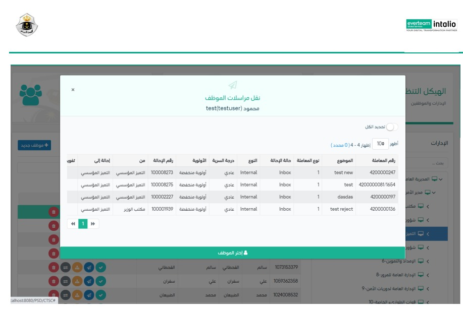

نقل مراسلات الموظف
بعد تحديد الادارة ومن ثم تحديد الموظف كما ظاهر في الصورة ادناه

وعند النقر على الاجراء سوف يظهر لك صفحة تتمضن الموظفين المسموح نقل مراسلات هذا الموظف له كما واضح في الصورة ادناه
ومن بعدها يجب تحديد الموظف او يمكننا اختيار الجميع ومن ثم النقر على اختر موظف لنقل المراسلات له